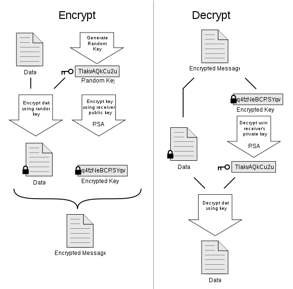

{kind=link}
{kind=link}
We believe security software like Kicksecure needs to remain Open Source and independent. Would you help sustain and grow the project? Learn more about our 14 year success story and maybe DONATE!
PQCryptoDocumentationSoftwarePrevious page: PQCryptoIndex page: DocumentationNext page: SoftwareOpenPGP

OpenPGP, gpg, Related Tools, Links, Advanced Topics, The OpenPGP Web of Trust, Bootstrapping OpenPGP keys from the web
 is copyrighted by Hauke Laging.|thumb")
The certification image (hauke_laging_gepruefter_artikel.en.png) is copyrighted by Hauke Laging.|thumb
Introduction
... a non-proprietary protocol for encrypting email communication using public key cryptography. It is based on the original PGP (Pretty Good Privacy) software. The OpenPGP protocol defines standard formats for encrypted messages, signatures, and certificates for exchanging public keys.
OpenPGP is the most widely used email encryption standard. ... OpenPGP was originally derived from the PGP software, created by Phil Zimmermann.
The primary purpose of OpenPGP relates to end-to-end encrypted email communication, but it is also utilized for encrypted messaging, password managers and other use cases. OpenPGP provides support for all major operating systems like Windows, macOS, GNU/Linux, Android and iOS. The openPGP standard was proposed to the Internet Engineering Task Force (IETF) and accepted as a standard in 1997. The standard has been continuously improved since that time and there is no suggestion intelligence agencies can break it. [3]
OpenPGP has an impressive resume and a host of applications, developer libraries and miscellaneous tools have implemented the OpenPGP standard either directly or with additional software. Applicable domains include:
- Email encryption: for various platforms, browser plugins, webmail providers with browser plugins, and webmail providers with in-browser cryptography
- Server software: webmail clients, keyservers, mailing list software and password managers
- Developer libraries: various OpenPGP libraries, libraries supporting OpenPGP smartcards, and developer tools
- Miscellaneous tools: web-based tools and other applications
Figure: How PGP Works [4]

To learn more about this topic, refer to the following resources:
To search for keys by email address, Key ID or Fingerprint, visit the
keys.openpgpg.org
server (.onion).
This publicly available service ("keyserver") enables the uploading,
discovery, distribution and management of OpenPGP-compatible keys.
Common Misconceptions
 Remember to check the GPG signature timestamp. For instance, if you
previously saw a signature from 2023 and now see one from 2022, this
could indicate a potential rollback (downgrade) or indefinite freeze
attack.[5]
Remember to check the GPG signature timestamp. For instance, if you
previously saw a signature from 2023 and now see one from 2022, this
could indicate a potential rollback (downgrade) or indefinite freeze
attack.[5]
 Remember: OpenPGP signatures sign the contents of files, not
the file names themselves. [6]
Remember: OpenPGP signatures sign the contents of files, not
the file names themselves. [6]
Key Servers
1. Test gpg.
For example, run.
gpg --keyserver keys.openpgp.org --recv A3C4F0F979CAA22CDBA8F512EE8CBC9E886DDD89
2. Note: The use of --recv or
--recv-key is deprecated.
Instead, it is recommended to securely download the key from a source that is logically connected to the owner, if possible, outside the keyserver model.
3. If a keyserver is required, utilize the onion
address for keys.openpgp.org.
At the time of writing, the following onion address is consistently
functional: http://zkaan2xfbuxia2wpf7ofnkbz6r5zdbbvxbunvp5g2iebopbfc4iqmbad.onion
4. Learn more about gpg configuration basics for use
with keys.openpgp.org.
Instructions are available here (.onion).
Also see:
Related Tools
Encrypt, decrypt, sign, and verify text using OpenPGP (GnuPG Frontend).
Issues with PGP
PGP has very bad usability and cryptography. Common PGP clients such as GnuPG are also not very secure. Thus, it is recommended against by many cryptography experts.
- What's the matter with PGP?
- The PGP Problem
- I'm giving up on PGP
- GPG And Me
- 15 reasons not to start using PGP
- Cryptography Dispatches: Replace PGP With an HTTPS Form
- signify: Securing OpenBSD From Us To You
Not yet reviewed: Better alternatives are age for file encryption
and signify for signing.
GnuPG Usability Security Issues
Security issue:
Automation issues:
Using gpg with scripts and automation is difficult and
potentially insecure.
Examples to avoid (generic) (non-exhaustive list):
- Any
gpgcommand that includes shell scripting such as- a pipe symbol ("
|"); |&;<(;&;||;$(...);- or any other
sh/bashkeyword; - see also How to detect if a Command contains Shell Scripting;
- for in user documentation is to be avoided.
- a pipe symbol ("
Examples to avoid (specific) (non-exhaustive list):
gpg --keyid-format long --import --import-options show-only --with-fingerprint [...] | grep "Key" | diff <(echo ' Key fingerprint = [...]') -
It is impossible to provide complete, exhaustive lists.
Upstream, the original developers of GnuPG state:
For scripted or other unattended use of gpg make sure to use the machine-parseable interface and not the default interface which is intended for direct use by humans. The machine-parseable interface provides a stable and well documented API independent of the locale or future changes of gpg. To enable this interface use the options '--with-colons' and '--status-fd'. For certain operations the option '--command-fd' may come handy too. See this man page and the file 'DETAILS' for the specification of the interface. Note that the GnuPG "info" pages as well as the PDF version of the GnuPG manual features a chapter on unattended use of GnuPG. As an alternative the library GPGME can be used as a high-level abstraction on top of that interface.https://www.gnupg.org/documentation/manuals/gnupg/GPG-Input-and-Output.html
This might get easier with Sequoia.
Sequoia
Sequoia might be a suitable replacement for GnuPG.
Install package(s) sq following these instructions:
1 Platform specific notice.
- Kicksecure: No special notice.
- Kicksecure-Qubes: In Template.
2 Update the package lists and upgrade the system.
sudo apt update && sudo apt full-upgrade
3
Install the sq package(s).
Using apt command line --no-install-recommends option is in
most cases optional.
sudo apt install --no-install-recommends sq
4 Platform specific notice.
- Kicksecure: No special notice.
- Kicksecure-Qubes: Shut down Template and restart App Qubes based on it as per Qubes Template Modification.
5 Done.
The procedure of installing package(s) sq is
complete.
forum discussions:
Sequoia-PGP automation
sqop parsing
sqop is Sequoia-PGP's implementation of the Stateless
OpenPGP (SOP) interface.
The SOP specification says:
When sop succeeds, it will return 0 (OK) and emit nothing to Standard Error.Stateless OpenPGP Command Line Interface, "Failure Modes"
When sop fails, it fails with a non-zero return code, and emits one or more warning messages on Standard Error.Stateless OpenPGP Command Line Interface, "Failure Modes"
The same specification also says that, when --debug is
present, sop may emit implementation-specific debugging
information to standard error.
Therefore, callers should treat stdout as the output
channel to parse, always check the exit status, and treat
stderr as diagnostic or debug output rather than structured
data.
In normal successful operation, that means sqop should
not emit stderr. On failure, stderr is the
right place to look for a user-facing error message.
sqop vs sq for automations
For automated used in programs or scripts use sqop not
sq!
Do not parse sq verify's human-readable
output.
- Sequoia explicitly warned that
sqoutput is "not machine readable", and recommended JSON output modes to avoid "common security-sensitive bugs" from manual parsing.- Source: Sequoia PGP release notes
sq verifyapplies authentication rules that depend on OpenPGP data, not on a stable machine-readable text format. In particular:- "If the signature includes a Signer User ID subpacket, then only that User ID is considered."
- "Note: the User ID need not be self signed."
- So a parser that tries to scrape signer identity from output may be confused by signature contents and policy decisions.
- Source:
sqmanual page
sq signsupports signature notations, and Sequoia documents them as "human readable". Free-text signature metadata is therefore a bad input source for a security-sensitive parser.- Source:
sq signmanual page
- Source:
Therefore,
- Treat
sq verifytext as diagnostic text for humans only. - Use only the process exit status for automation, unless Sequoia provides a documented stable machine-readable format.
- Do not attempt derive status fields such as
keyid,userid,fingerprint, orprimary_fprby parsingsq verifyoutput.
PGPainless
Another potential replacement for GnuPG.
Links
In English Language
- Email Self-Defense
- OpenPGP For Beginners
- OpenPGP Getting Started
- OpenPGP Help Spread
- How to use GnuPG securely
- See also if there are any crypto parties in your vicinity.
- Try typing "crypto party" followed by the nearest city in a search engine of your choice.
- https://github.com/lfit/itpol/blob/master/protecting-code-integrity.md
In German Language
- Informationen über OpenPGP
- kostenlose Schulungsangebote
- Förderung von OpenPGP
- Wie man GnuPG sicher verwenden kann
Advanced Topics
Air Gapped OpenPGP Key
Clearsign with Multiple Keys
Clearsign text document with multiple keys?
The OpenPGP Web of Trust
If you want to be extra cautious and really authenticate a OpenPGP key in a stronger way than what standard HTTPS offers you, you could use the OpenPGP Web of Trust.
One of the inherent problems of standard HTTPS is that the trust we usually put on a website is defined by certificate authorities: a hierarchical and closed set of companies and governmental institutions approved by web browser vendors. This model of trust has long been criticized and proved several times to be vulnerable to attacks as explained on our warning page.
We believe instead that users should be given the final say when trusting a website, and that designation of trust should be done on the basis of human interaction.
The OpenPGP Web of Trust is a decentralized trust model based on OpenPGP keys. Let's see that with an example.
You're a friend of Alice and really trust her way of managing OpenPGP keys. You've validated Alice's key.
Furthermore, Alice met Bob in a conference, and signed Bob's key.
This scenario creates a trust path from you to Bob's key that could allow you to validate it without having to depend on certificate authorities.
This trust model is not perfect either and requires both caution and intelligent supervision by users. The technical details of creating, managing and trusting OpenPGP keys are outside of the scope of this document.
We also acknowledge that not everybody might be able to create good trust path since it based on a network of direct human relationships and the knowledge of quite complex tools such as GnuPG.
- https://book.sequoia-pgp.org/bckgrnd_wot.html
- https://sequoia-pgp.gitlab.io/sequoia-wot/
- https://sequoia-pgp.org/blog/2023/03/29/202303-pretty-graphics-for-the-web-of-trust/
Bootstrapping OpenPGP Keys from the Internet
Some OpenPGP users are unsure how to stay totally anonymous or what steps to take if there is no trusted path to an OpenPGP key.
Some people just write an unencrypted mail to the recipient and ask them to send their public key. The recipient will most likely either send their public key or at least its fingerprint.
This method works against passive attacks since an observer will not know what has been discussed in the following encrypted mails. However, this method totally fails against active attacks. A man-in-the-middle could replace the recipient's key with their own malicious key. The sender would then use the wrong key, the man-in-the-middle would decrypt the message, read it, and re-encrypt it with the legitimate key and forward it to the recipient. Neither the sender nor recipient would ever discover that their messages were being read by an adversary. This is the whole reason why the trust model path and key signing is recommended in the first place.
As an alternative, some people also publish their OpenPGP fingerprint
or their OpenPGP public key on their personal or other websites. This
method is more secure if the website is accessible over TLS -- even more
so when both server and client are using HSTS
(and DNSSEC)
-- and/or as an onion service with a .onion domain. Of
course, this presupposes the visitor is aware what kind of
transportation mechanism is provided. In this case, the adversary would
have to:
- break the TLS or onion encryption where someone wants to obtain the key or fingerprint; or
- compromise the server
Depending on the adversary this may take more resources. It should be noted that both the public CA system of TLS and Tor onion services have security issues; see TLS and Onion Services Security for further information.
Based on the preceding discussion, it is safest if the same website
is accessible over both https and .onion.
This configuration allows the user to visit both sites and then check if
the OpenPGP fingerprint/key results match.
To further improve the situation the key holder can spread its fingerprint and/or OpenPGP key to other websites. Some key holders attach their OpenPGP fingerprint to their email signature (a short attachment to any mail) and to public mailing lists they are participating in. This behavior makes it difficult for an adversary to successfully spoof all these information avenues. Spreading the fingerprint and/or key in various domains is only helpful if the person searching is either aware of that fact or has undertaken research on their own initiative.
https://api.github.com/users//gpg_keys
example: https://api.github.com/users/adrelanos/gpg_keys
GnuPG Key Encryption vs OpenPGP Hardware Protection
 This comparison is incomplete.
This comparison is incomplete.
Domain |
GnuPG Encryption of OpenPGP Private Key |
Hardware Protection [7] |
OpenPGP private key can be protected by software encryption |
Yes [8] |
No [9] |
OpenPGP private key can be stored encrypted on storage |
Yes [10] |
|
Software or device implementation: 100% Freedom Software |
Yes |
No [13] |
Can be independently reproduced and audited |
Yes |
No [14] |
Number of people capable of auditing the implementation |
Small [15] |
Very small [16] |
OpenPGP private key is protected by hardware, making it very difficult to extract the key from the device's storage |
No |
Yes [17] |
Wipes OpenPGP private key once physical tampering is detected (FIPS 140-2 Level 3) |
No |
No (?) [18] |
OpenPGP private key access notification |
No |
Some, yes (?) [19] |
No |
Some, yes [22] |
|
OpenPGP private key can no longer be abused once detached from malware infected machine |
No [23] |
Yes [24] |
User difficulty in remembering secret |
Medium [25] |
Easy [26] |
Usability |
Medium [27] |
Difficult [28] |
OpenPGP private key security once lost (without machine compromise) [29] |
||
OpenPGP private key cannot be used by malware [36] when key attached [37] and passphrase stolen [38] or pin cached |
No |
No |
OpenPGP private key cannot be extracted, deleted or revoked by malware |
No [39] |
Yes |
Encryption of user's data is still effective once malware infected |
No [40] |
No [41] |
Signatures cannot be created by malware |
No |
No |
Signature counter on hardware device |
No |
Yes [42] |
Signature counter on computer display trustworthy if attached on malware infected computer |
Not applicable |
No [43] |
Signature counter trustworthy if attached on malware-free machine [44] |
Not applicable |
Yes |
In conclusion, both options have unique advantages. Unfortunately, it is not yet possible to combine both options. [12]
FAQ
Why aren't the SKS keyserver wiki steps always functional?
The SKS keyserver network has recently come under attack after a critical vulnerability was discovered which allows certificates to be spammed using a flaw in the OpenPGP protocol itself. Future releases of OpenPGP software will likely mitigate this flaw, but high profile contributors to the protocol suggest that data should not be retrieved form the network at present if possible. For more details, see here. [45] [46]
Is the OpenPGP keyserver part of the SKS pool?
The OpenPGP keyserver FAQ notes:
No. The federation model of the SKS pool has various problems in terms of reliability, abuse-resistance, privacy, and usability. We might do something similar to it, but keys.openpgp.org will never be part of the SKS pool itself.
Why can't I receive a key using the new keyserver
keys.openpgp.org?
At the time of writing, the clearnet keyserver will sometimes lead to the following error:
gpg: keyserver receive failed: No keyserver availableAs recommended here, either:
- Securely download the key from a source outside the keyserver model; or
- If that is not possible, utilize the keyserver v3 onion address
instead:
http://zkaan2xfbuxia2wpf7ofnkbz6r5zdbbvxbunvp5g2iebopbfc4iqmbad.onion
See Also
- Verifying Software Signatures
- OpenPGP
- Verify the images
- Kicksecure Signing Key
- Software Signature Verification Usability Issues and Proposed Solutions
Footnotes
- https://www.openpgp.org/about/
- https://www.openpgp.org/
- https://en.wikipedia.org/wiki/Pretty_Good_Privacy#OpenPGP
- https://en.wikipedia.org/wiki/File:PGP_diagram.svg
- As defined by TUF: Attacks and Weaknesses: * https://theupdateframework.io/security/
- https://lists.gnupg.org/pipermail/gnupg-users/2015-January/052185.html
- Token or smartcard.
- If a secure password has been chosen to protect the OpenPGP private key.
- The OpenPGP private key is stored unencrypted on the storage of the smartcard or token.
- Stored on HDD, SSD, USB etc.
- Stored on the memory chip of the smartcard or token.
- Source:
* gnupg-users mailing list: Possible to combine smartcard PIN with key password?
* Patrick Schleizer specifically asked Werner Koch about this at c3c1. This is neither possible nor a planned or likely future feature. - The specification may be Freedom Software, but currently there are no blueprints for smartcards or tokens that meet this definition.
- Due to the absence of blueprints and copyright, no other company can reproduce/audit security.
- Written in C and using cryptography. This is a difficult endeavor and beyond most individuals.
- Hardware is more difficult than software and this particular type of hardware is even harder. Only the manufacturing engineers are capable of understanding it. In the case of closed hardware implementations, which is the case for most (if not all) tokens and smartcards , open and independent audits are impossible.
- It is very difficult to read the storage of smartcards and tokens. Professional data recovery companies usually decline requests for recovery from such storage.
- The author is unaware of any OpenPGP tokens or smartcards that claim to possess this security feature.
- It is understood some external smartcard readers blink a flashlight and/or tone when the key is being accessed.
- Password versus pin.
- On an external device that is usually not infected by malware.
- For example spr332 devices.
- A skilled adversary will take a copy of both the OpenPGP private key and the passphrase, just in case that the user manages to move to a malware-free machine.
- Since adversaries cannot extract the key to get a copy, once the compromise has been undone -- either by chance, by doing a clean re-installation which the malware did not survive or because the malware is noticed -- future files/mails encrypted to the private key can no longer be decrypted by the adversary. No new malicious signatures can be made anymore. Revoking previously compromised keys would still be advisable, because the adversary may have created a large number of signatures for all sorts of texts and/or files.
- A long passphrase.
- A medium-sized pin.
- Arguably, OpenPGP is not that simple. In comparison, OTR has a smaller feature set (for example, no signatures for publicly released files), but encryption is much more usable. OTR is younger and has more users.
- Initial setup is harder than GnuPG private key password encryption and generally difficult.
- Assumptions:
* no malware on user's computer
* either the storage (HDD, SSD, USB etc.) holding the OpenPGP private key vs token or smartcard has been lost or stolen. - The adversary would require either:
* a backdoor in GnuPG itself; or
* a backdoor in the distribution that shipped GnuPG; or
* found a vulnerability in GnuPG; or
* found an effective weakness in the encryption algorithm used by GnuPG. - No vulnerabilities in GnuPG's private OpenPGP key encryption has ever been reported.
- Quote Wikipedia:
Smart cards can be physically disassembled by using acid, abrasives, or some other technique to obtain unrestricted access to the on-board microprocessor. Although such techniques involve a fairly high risk of permanent damage to the chip, and irrecoverable loss of the secret keys therein, they permit much more detailed information (e.g. photomicrographs of encryption hardware) to be extracted.
- Other, non-OpenPGP smartcards have been cracked in the past using ultra-expensive electron-scanning microscopes. Source: theguardian, How codebreakers cracked the secrets of the smart card
- https://www.cl.cam.ac.uk/~sps32/mcu_lock.html
- More information is required on how realistic, difficult and expensive these attacks are. Additional reader contributions on this issue are most welcome.
- If the machine in use has been compromised by malware like a trojan horse.
- On storage (HDD, SSD, USB etc.) vs on token or smartcard.
- By keylogger or extracted from memory once cached.
- Therefore make sure to have a backup on storage that is never attached to that machine.
- An adversary who managed to compromise the user's machine can use a keylogger to sniff the OpenPGP private key password once it is entered next time or extract it from memory if it is still cached. Any of the user's encrypted email, files, etc. (that are read from the user's devices or that have been extracted from other sources, such as by man-in-the-middle attacks or obtained from the user's mail provider and so forth) can then be decrypted.
- An adversary who managed to compromise the user's machine can wait until the user caches its pin next time. Otherwise, same as above. Once a machine has been compromised, nothing it shows can be trusted anymore, even if the PIN is never cached. If the PIN is cached or not is up to the software on the user's machine which can be no longer trusted once compromised. The adversary could install their own key caching software (gnupg-agent). Instead of the user's request "decrypt mail X", malware can also intercept this and make it "decrypt mail Y and X".
- Users could attach their smartcard to other computers, perhaps non-compromised, perhaps offline machines and check the signature counter. For example output, see: Using an OpenPGP Smartcard with GnuPG.
- Once malware is running on a machine, nothing the machine displays can be trusted. It could be manipulated by the malware.
- Assumption: The token or card reader has not been compromised by malware running on the user's machine.
- New, experimental keyservers have been established which afford protection against this attack.
- The author notes the potential downsides of this attack:
- If you fetch a poisoned certificate from the keyserver network, you will break your GnuPG installation. * Poisoned certificates cannot be deleted from the keyserver network. * The number of deliberately poisoned certificates, currently at only a few, will only rise over time. * We do not know whether the attackers are intent on poisoning other certificates. * We do not even know the scope of the damage.
License
The certification image (hauke_laging_gepruefter_artikel.en.png) is copyrighted by Hauke Laging.
The rest of this page is under the following license.
Kicksecure OpenPGP wiki page Copyright (C) Amnesia Kicksecure OpenPGP wiki page Copyright (C) 2012 - 2026 ENCRYPTED SUPPORT LLC <adrelanos@whonix.org>
This program comes with ABSOLUTELY NO WARRANTY; for details see the wiki source code. This is free software, and you are welcome to redistribute it under certain conditions; see the wiki source code for details.
Categories: Documentation